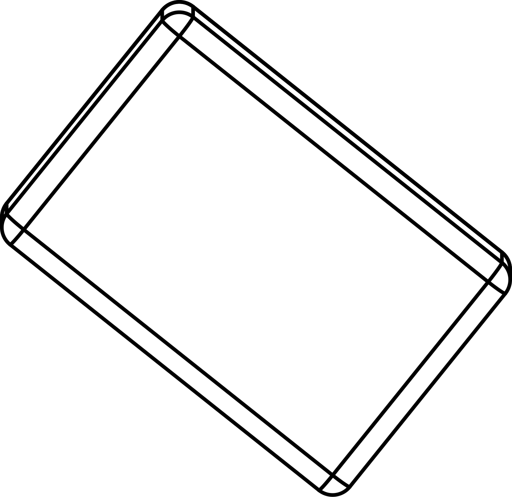

Na iPhonu nebo iPadu v Safari klepni na obrázek — otevře se Quick Look / AR. Funguje jen když tento adresář servíruje HTTPS a .usdz jako model/vnd.usdz+zip (GitHub Pages po zapnutí; git blob nestačí).
.usdz
model/vnd.usdz+zip

WebGL prohlížeč (funguje i jako jeden soubor, bez hostingu)